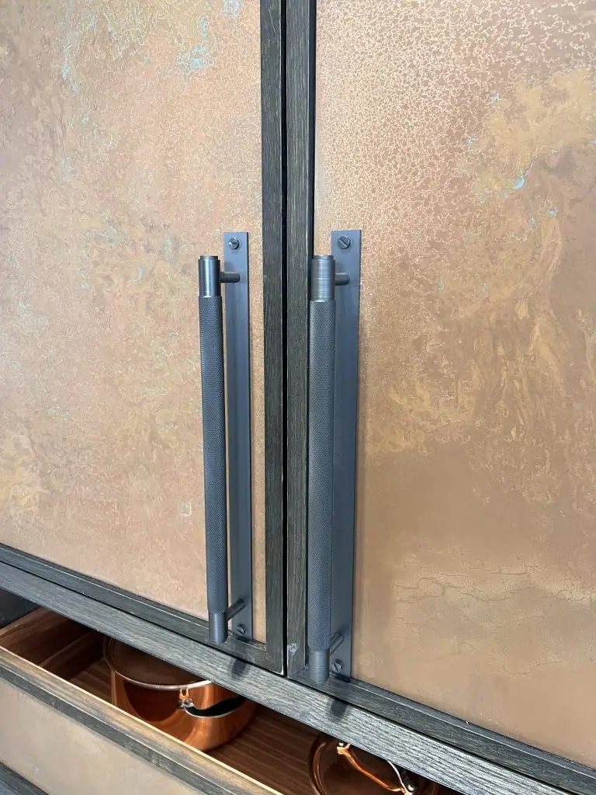

Ideal for those looking to add a touch of artisanal craftsmanship to their living spaces, copper cupboard doors are functional elements that bring warmth, elegance, and a unique flair to every living space.
Whether you’re updating your kitchen with shimmering, polished natural copper or adding a rustic, textured finish to your bedroom cabinets, copper doors can complement both modern and traditional decor. These copper cupboard doors can even offer an artistic flair in custom furniture pieces or standout features in boutique commercial spaces. Their antimicrobial properties also make them a smart choice for kitchen and bathroom environments, ensuring your spaces are not only stylish but hygienic too.
Contact Halman Thompson for more information or request a bespoke quote .


Tailored to you
Halman Thompson prides itself on its bespoke craftsmanship. Each copper cupboard door is tailored to meet your personal preferences and required dimensions so that no two pieces are the same. Our artisans expertly hand-age quality copper sheets to achieve a striking aged copper appearance.
From bespoke cuts to intricate detailing, our prices include delivery, ensuring that your unique cupboard doors arrive ready for installation.
Perfect for every room
Our extensive range of natural and aged copper finishes means there’s always a style to suit every taste and room. From the natural, rosy aesthetic of Natural Copper in the kitchen to the eye-catching blue-green verdigris of an aged finish like Northumberland in the living room, the options are endless. Each copper cupboard door is finished to your requirements by our skilled team, bringing your vision to life and providing a truly bespoke product that’s uniquely yours.
These doors are perfect for dressing up a bathroom, bedroom, kitchen, or living room, our copper cupboard doors can be the centrepiece or a subtle complement to your decor. Get in touch for a bespoke quote .
Handmade Copper Cupboard Doors
Every copper cupboard door from Halman Thompson is bespoke to order and handcrafted with care. This means you can choose the exact size, shape and patina of your piece, with a variety of copper finishes and effects:
- Ayrshire Finish : Features a speckled patina effect that adds a rustic yet sophisticated look.
- Brushed Copper : Offers a smooth, subdued sheen that works well in both traditional and contemporary settings.
- Cheshire Finish : A gently aged finish with autumnal tones that brings a traditional aesthetic.
- Hertfordshire Finish : A unique ‘stained glass’ effect with shards of copper and crackles of verdigris, perfect for adding a dramatic touch.
- Natural Copper : A natural and rosy charm, ideal for those who prefer an understated elegance.
- Northumberland Finish : Displays a marbled appearance with swirls of turquoise verdigris for a striking statement.
- Pembrokeshire Finish : Boasts the glossy, glowing finish of natural copper with deep earthy flecks of umber.
The Ageing Process
Our ageing process at Halman Thompson is what truly sets our copper cupboard doors apart. Each sheet of copper is artificially aged by hand to enhance its natural beauty and bring out unique patterns and textures to your liking.
This controlled process allows us to ensure consistency and quality, enabling us to produce distinctive, long-lasting copper features that stand the test of time. This bespoke ageing method ensures that no two pieces are exactly the same, giving you a one-of-a-kind addition to enjoy.
Easy Care for Long-Lasting Beauty
Maintaining the beauty of your copper cupboard doors is easy and hassle-free. Simply wiping them down with a soft cloth and warm soapy water is all that’s needed to keep the doors looking their best. No special solutions or difficult processes are required!
We provide comprehensive care instructions with every order, ensuring you know exactly how to look after your bespoke copper cupboard doors, and our team is always on hand to assist with any queries you might have.
Contact Halman Thompson or complete the quote form for a personalised copper cupboard door quotation.


If you can dream it, we’ll make it.
Bars, balustrades, staircases, worktops, cladding and pieces that don’t have a name yet. Our designers and craftspeople work in brass, copper, zinc and steel, and alongside wood.